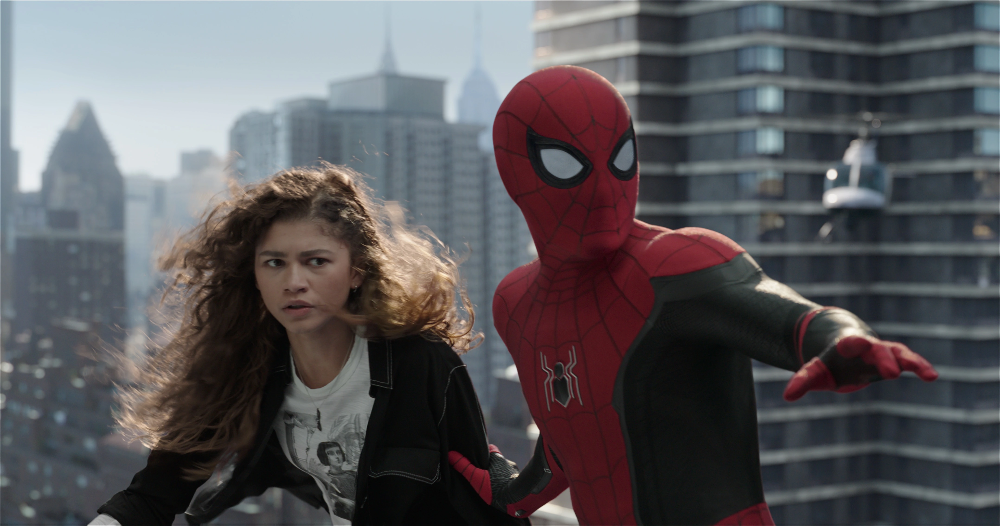
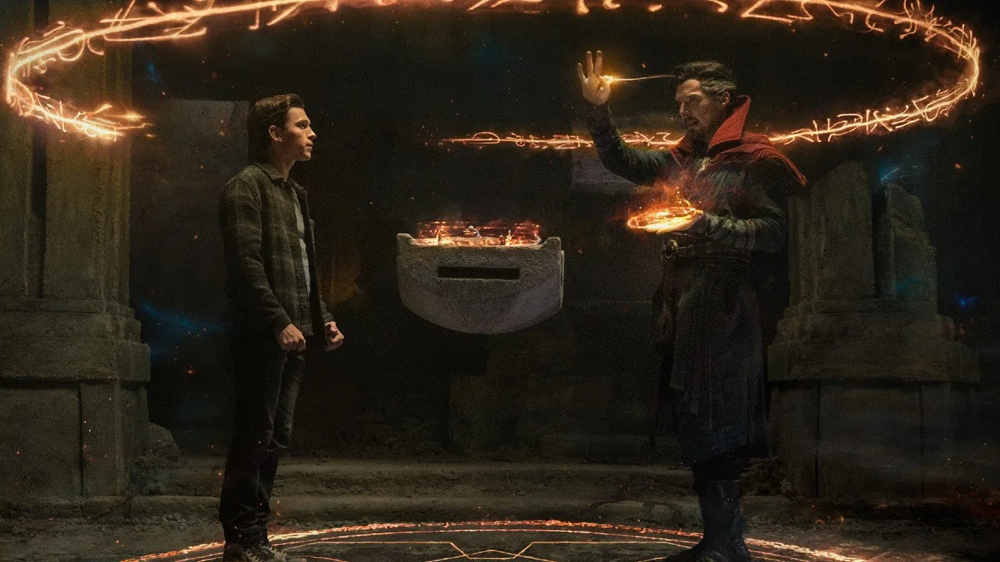
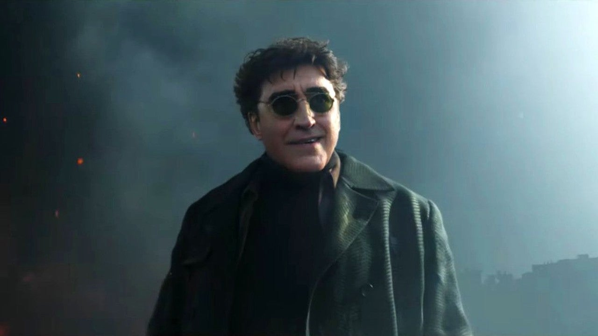

Spider-Man: No Way Home
Spoiler fri recension
Spider-Man: No Way Home är Tom Hollands tredje solo Spider-Man film och detta är sjätte gången han spelar rollen som Peter Parker. Denna gången börjar filmen där förra filmen slutade och då får man se när Mysterio avslöjar Peter Parkers identitet som Spider-Man. Panik uppstår och filmens mål är att komma ur denna situation eftersom att det påverkar personer som Peter bryr sig om. Hans bästa vänner kommer inte in på MIT eftersom de är associerade med vigilanten Spider-Man.
Så Peter tänker att den smartaste idén är att fråga Doctor Strange som är en trollkarl att kasta en besvärjelse som gör så att alla glömmer bort att Peter Parker är Spider-Man, men problemet är att Peter ber Doctor Strange att lägga till tre personer som fortfarande kommer komma ihåg honom vilket gör att besvärjelsen blir korrupt och den fungerar inte. Strange frågar Peter om han har pratat med skolan om det går att lösa att han och hans vänner kan komma in på MIT och då säger Peter "Nej, kan man göra det?".
Detta resulterar att Strange kastar ut Peter och då ringer Peter Flash och frågar om han vet vart man kan få tag på rektorn, och då får han reda på att hon är på väg till flygplatsen så han tänker att han ska svinga dit och fråga henne ifall det finns en chans för sina vänner att komma in på MIT och att de inte borde bli straffade pga saker han har gjort.
När allt detta händer så märker Peter med sitt spider-sense att någonting är på gång och ser människor springa iväg och när han märker detta tar han på sin dräkt och då får man se ett bekant ansikte. Doctor Octupus från de gamla Spider-Man filmerna
